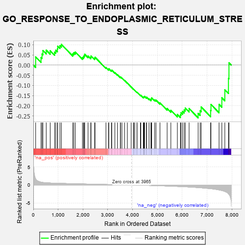
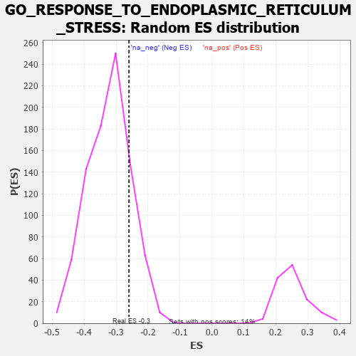

| | | Dataset | 7d |
| Phenotype | NoPhenotypeAvailable |
| Upregulated in class | na_neg |
| GeneSet | GO_RESPONSE_TO_ENDOPLASMIC_RETICULUM_STRESS |
| Enrichment Score (ES) | -0.25967526 |
| Normalized Enrichment Score (NES) | -0.8046756 |
| Nominal p-value | 0.82312137 |
| FDR q-value | 0.98978055 |
| FWER p-Value | 1.0 |
Table: GSEA Results Summary

Fig 1: Enrichment plot: GO_RESPONSE_TO_ENDOPLASMIC_RETICULUM_STRESS
Profile of the Running ES Score & Positions of GeneSet Members on the Rank Ordered List
| PROBE | GENE SYMBOL | GENE_TITLE | RANK IN GENE LIST | RANK METRIC SCORE | RUNNING ES | CORE ENRICHMENT | | 1 | UBE2K | | | 94 | 1.739 | 0.0403 | No |
| 2 | JKAMP | | | 310 | 0.804 | 0.0373 | No |
| 3 | GSK3A | | | 351 | 0.745 | 0.0546 | No |
| 4 | BAX | | | 387 | 0.711 | 0.0715 | No |
| 5 | GET4 | | | 520 | 0.623 | 0.0735 | No |
| 6 | FAF2 | | | 680 | 0.566 | 0.0703 | No |
| 7 | AMFR | | | 856 | 0.518 | 0.0637 | No |
| 8 | TMTC3 | | | 903 | 0.506 | 0.0731 | No |
| 9 | ATG10 | | | 970 | 0.490 | 0.0795 | No |
| 10 | UBA5 | | | 982 | 0.488 | 0.0927 | No |
| 11 | AIFM1 | | | 1072 | 0.469 | 0.0955 | No |
| 12 | NCK2 | | | 1131 | 0.458 | 0.1019 | No |
| 13 | ERP29 | | | 1589 | 0.376 | 0.0553 | No |
| 14 | DERL2 | | | 1632 | 0.368 | 0.0611 | No |
| 15 | HYOU1 | | | 1692 | 0.358 | 0.0644 | No |
| 16 | BRSK2 | | | 1979 | 0.308 | 0.0374 | No |
| 17 | UBXN6 | | | 2021 | 0.302 | 0.0412 | No |
| 18 | GOSR2 | | | 2050 | 0.298 | 0.0467 | No |
| 19 | TMUB2 | | | 2070 | 0.295 | 0.0531 | No |
| 20 | HM13 | | | 2205 | 0.276 | 0.0444 | No |
| 21 | UBE4B | | | 2313 | 0.258 | 0.0386 | No |
| 22 | TMUB1 | | | 2326 | 0.257 | 0.0448 | No |
| 23 | UBXN1 | | | 2467 | 0.232 | 0.0341 | No |
| 24 | UBAC2 | | | 2488 | 0.229 | 0.0384 | No |
| 25 | ERO1A | | | 2925 | 0.162 | -0.0120 | No |
| 26 | TLN1 | | | 3030 | 0.145 | -0.0208 | No |
| 27 | UFL1 | | | 3041 | 0.144 | -0.0177 | No |
| 28 | EDEM2 | | | 3145 | 0.131 | -0.0268 | No |
| 29 | ERN2 | | | 3160 | 0.129 | -0.0248 | No |
| 30 | SERP2 | | | 3286 | 0.108 | -0.0374 | No |
| 31 | DDX3X | | | 3388 | 0.091 | -0.0474 | No |
| 32 | UFM1 | | | 3506 | 0.077 | -0.0599 | No |
| 33 | PDIA6 | | | 3512 | 0.075 | -0.0583 | No |
| 34 | DERL1 | | | 3570 | 0.065 | -0.0636 | No |
| 35 | STT3B | | | 3676 | 0.047 | -0.0755 | No |
| 36 | SRPRA | | | 3788 | 0.029 | -0.0886 | No |
| 37 | TMX1 | | | 3942 | 0.004 | -0.1079 | No |
| 38 | TOR1A | | | 4030 | -0.013 | -0.1185 | No |
| 39 | SGTB | | | 4044 | -0.015 | -0.1197 | No |
| 40 | FICD | | | 4087 | -0.022 | -0.1244 | No |
| 41 | TBL2 | | | 4175 | -0.038 | -0.1343 | No |
| 42 | PDX1 | | | 4179 | -0.038 | -0.1335 | No |
| 43 | AUP1 | | | 4315 | -0.062 | -0.1488 | No |
| 44 | OPA1 | | | 4330 | -0.065 | -0.1486 | No |
| 45 | MYDGF | | | 4429 | -0.081 | -0.1585 | No |
| 46 | TMCO1 | | | 4451 | -0.085 | -0.1587 | No |
| 47 | SYVN1 | | | 4454 | -0.085 | -0.1563 | No |
| 48 | LRRK2 | | | 4467 | -0.087 | -0.1552 | No |
| 49 | ERP44 | | | 4482 | -0.091 | -0.1543 | No |
| 50 | CXXC1 | | | 4557 | -0.107 | -0.1604 | No |
| 51 | BAG6 | | | 4563 | -0.108 | -0.1578 | No |
| 52 | ITPR1 | | | 4661 | -0.130 | -0.1662 | No |
| 53 | PDIA3 | | | 4740 | -0.147 | -0.1717 | No |
| 54 | EDEM3 | | | 4746 | -0.148 | -0.1678 | No |
| 55 | UBE4A | | | 4755 | -0.149 | -0.1644 | No |
| 56 | SRPRB | | | 4769 | -0.151 | -0.1615 | No |
| 57 | CLU | | | 4889 | -0.174 | -0.1713 | No |
| 58 | EP300 | | | 4941 | -0.186 | -0.1722 | No |
| 59 | DDX11 | | | 5102 | -0.225 | -0.1857 | No |
| 60 | SSR1 | | | 5391 | -0.294 | -0.2134 | No |
| 61 | EDEM1 | | | 5541 | -0.331 | -0.2223 | No |
| 62 | PDIA4 | | | 5803 | -0.406 | -0.2432 | No |
| 63 | UFC1 | | | 5925 | -0.443 | -0.2452 | Yes |
| 64 | DCTN1 | | | 5950 | -0.454 | -0.2346 | Yes |
| 65 | XBP1 | | | 6011 | -0.475 | -0.2279 | Yes |
| 66 | CALR | | | 6077 | -0.499 | -0.2212 | Yes |
| 67 | UBXN4 | | | 6122 | -0.511 | -0.2114 | Yes |
| 68 | FLOT1 | | | 6276 | -0.564 | -0.2138 | Yes |
| 69 | PDIA5 | | | 6639 | -0.734 | -0.2376 | Yes |
| 70 | GSK3B | | | 6719 | -0.768 | -0.2245 | Yes |
| 71 | PDIA2 | | | 6762 | -0.792 | -0.2061 | Yes |
| 72 | CFTR | | | 7143 | -1.030 | -0.2233 | Yes |
| 73 | UFD1 | | | 7157 | -1.040 | -0.1937 | Yes |
| 74 | VAPB | | | 7482 | -1.378 | -0.1933 | Yes |
| 75 | ASNS | | | 7595 | -1.547 | -0.1610 | Yes |
| 76 | BOK | | | 7715 | -1.817 | -0.1215 | Yes |
| 77 | TRAF2 | | | 7861 | -2.481 | -0.0653 | Yes |
| 78 | CHAC1 | | | 7882 | -2.633 | 0.0113 | Yes |
Table: GSEA details [plain text format]

Fig 2: GO_RESPONSE_TO_ENDOPLASMIC_RETICULUM_STRESS: Random ES distribution
Gene set null distribution of ES for GO_RESPONSE_TO_ENDOPLASMIC_RETICULUM_STRESS